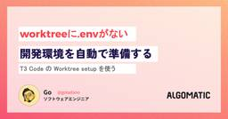

Algomatic Tech Blog
https://tech.algomatic.jp/
Algomaticの開発チームによる Tech Blog です
フィード

worktree に .env がない──T3 Code で開発環境を自動セットアップする
Algomatic Tech Blog
こんにちは。AlgomaticでソフトウェアエンジニアをしているGo（@53able）です。 AI コーディングエージェントに1つの作業を頼んでいる間に、別の作業も進めたい。例えば、機能追加を任せている横で、別のエージェントに独立したバグ修正を頼むような使い方です。 でも、同じディレクトリで作業すると、一方がファイルを編集したりブランチを切り替えたりしたとき、もう一方にも影響します。作業ごとにブランチとディレクトリを分けたい。それぞれのエージェントが、自分の変更を編集して確認できるようにしたい。そこで git worktree を使うことにしました。 ただ、ディレクトリを分けただけではテストも…
2日前
Issueに着手する前に、関連する修正を調べる。issue-graphを試して分かったこと
Algomatic Tech Blog
こんにちは。AlgomaticでソフトウェアエンジニアをしているGo（@53able）です。 Issueの修正を始めてから、同じ問題に対応するPRがすでにあると分かると、作業が重複することがあります。関連するIssueに書かれた再現条件を見落としていれば、修正方針を見直す必要もあります。着手前に既存のPRや関連Issueを調べ、どこまで対応済みで、何を確認する必要があるかを把握しておきたいところです。 Vercel Labsの issue-graph は、IssueやPRの参照をたどり、関連項目とその状態をまとめて取得するCLIツールです。関連するIssueやPRと、それぞれが未解決・クローズ…
4日前

json-render/chatを手元で動かしたら、カード全体の検証は最後の一回だけだった 1
1
Algomatic Tech Blog
こんにちは。AlgomaticでソフトウェアエンジニアをしているGo（@53able）です。 2026年11月7日（日本時間）、Vercel Labs の Chris Tate が @json-render/chat を発表しました。AIエージェントの返答を、Slack や Teams のネイティブなカードとして出すためのパッケージです。カードには表・項目・グラフ・ボタンを置けます。カードはモデルの出力に合わせて少しずつ表示されます。カタログを一つ定義すれば、Vercel の Chat SDK が対応するすべてのプラットフォームで使えます。ただし、表示形式や使える操作はプラットフォームによって…
7日前

人が作ったスキルで「ここ直して」と頼んだら、その直しはどこに残すか ―「今回だけの対応」を使う側から考えてみた
Algomatic Tech Blog
こんにちは。AlgomaticでソフトウェアエンジニアをしているGo（@53able）です。 先日、「Agent Skillsで「今回だけの対応」を残しすぎないようにしたい」という記事を書きました。エージェントに頼んだ一度きりの対応が、スキル本体に書き戻されて、次からの手順になってしまう。その問題について書いたものです。 tech.algomatic.jp そうしたら、社内の方から質問をもらいました。その方は、ほかの人が作ったスキルを仕事で使っていて、自分でもスキルを作り始めているそうです。 記事は読んだけれど、使う側として自分の作業にどう当てはめればいいか分からなかった。 言われてみると、た…
8日前
Observabilityの土台としてのログ：AIと調査できるイベントを5つのloggerで検証した
Algomatic Tech Blog
こんにちは。AlgomaticでソフトウェアエンジニアをしているGo（@53able）です。 AI エージェントに「この失敗を調べて」と頼んだのに、返ってきたのは推測ばかりだった。そんな経験はないでしょうか。 そういうとき、「AI がまだ賢くないからだ」と考えたくなります。ただ、今回の検証で LLM が答えに詰まったのは、ログに必要な情報が入っていなかったときでした。 同じ LLM でも、情報を足したログには答えられました。人間も AI も調査できるように、問いに答えるための情報をログに残す必要があります。 この記事は、Node.js の logger をこれから選ぶ人や、今の logger …
9日前
検索は1回で足りるのか：grep で探すエージェント DCI(Direct Corpus Interaction) と、Top-5 を1回だけ取る RAG を同じ文書で比べてみた
Algomatic Tech Blog
1. 検索インターフェースの違いが問題になる場面 2. 検証した問い 3. 比較した 3 方式 4. 実験設定 4.1 架空の運用文書コーパス 4.2 実行条件 5. 結果 5.1 全体の正答率 5.2 カテゴリ別の正答率 5.3 DCI が 1 問を解く手順 5.4 費用と応答時間 6. 結果の適用範囲と限界 7. 今後の展望 8. まとめ 参考資料 こんにちは。Algomatic でテックリードをしている武藤（muto_masa）です。 社内文書を検索する仕組みを作るとき、「質問に近いチャンクを BM25 や埋め込みで Top-k 件取り、まとめて LLM に渡す」という RAG 構成が定…
9日前
Agent Skillsで「今回だけの対応」を残しすぎないようにしたい
Algomatic Tech Blog
こんにちは。AlgomaticでソフトウェアエンジニアをしているGo（@53able）です。 エージェントに、ある実行に限って適用してほしい対応を頼むことがあります。この記事ではこれを「今回だけの対応」と呼びます。図や表では短く「一時対応」と書きます。その内容までスキルに書き戻してよいのか、というのが気になっています。 たとえば、ある入力ファイルにだけ不備があり、補正して処理することにしたとします。説明用の例ですが、その実行ではそれで進めたいです。でも、次回からすべての入力を同じ方法で補正してほしいわけではありません。 目の前の作業に合わせて動いてほしい気持ちと、共通の手順は変えないでほしい気…
10日前
agent-desktop にデスクトップ操作をどこまで任せられるか：Linux で確かめた範囲と条件
Algomatic Tech Blog
こんにちは。AlgomaticでソフトウェアエンジニアをしているGo（@53able）です。 2026年10月31日に、agent-desktop という CLI が発表されました。コーディングエージェントにデスクトップアプリを操作させるためのツールです。ユーザーが作業している間もバックグラウンドで動くことと、複数のエージェントが並列に動けることが売りになっています。 github.com Introducing agent-desktopagent-browser, for your whole computer→ Computer Use for any coding agent→ mac…
13日前
EmbeddingGemma 2 でOCRがしたい
Algomatic Tech Blog
1. はじめに こんにちは！Algomaticエンジニアの末國です。 先日、EmbeddingGemma 2 に音声認識（Speech to Text）をさせる取り組みを見かけました。 I turned @googlegemma EmbeddingGemma 2, an embedding model, into a speech-to-text model, and it turned out to be one of the fastest STT models you can run on device. On a base M3 MacBook Air it transcribes a…
15日前
git タグで固定すれば skills update でも変わらない
Algomatic Tech Blog
こんにちは。AlgomaticでソフトウェアエンジニアをしているGo（@53able）です。 私は、Claude Code や Codex 向けの複数のエージェントスキルをまとめたリポジトリを、vercel-labs/skills の CLI（npx skills add）で配っています。バージョン管理をしようとしたとき、私は2つのことが分かっていませんでした。利用者は特定のバージョンに固定できるのか。利用者が skills update を実行すると何が起きるのか。 github.com この記事は、その2つを調べて確かめた記録です。同じように npx skills でスキルを配っている人が…
17日前
causal-learnとDoWhyで因果探索から介入シミュレーションまでを可視化する
Algomatic Tech Blog
こんにちは。Algomaticでテックリードをしています武藤です。10月1日に入社いたしました。 よろしくお願いいたします。 この記事の想定読者：生成AIやAIエージェントを業務に導入しているエンジニア、テックリード、データサイエンティスト
17日前
Matt Pocockのsoftware-factoryスキルで、AIへの任せ方を考えてみます
Algomatic Tech Blog
こんにちは。AlgomaticでソフトウェアエンジニアをしているGo（@53able）です。 AIにバグ修正を任せるとき、どこまで任せてよいのかは少し迷うところです。報告が来たら、全部調べてよいのでしょうか。仕様が分からないときは、質問してほしい場合もあります。修正が終わらないときの対応も、決めておいたほうがよさそうです。 Matt Pocockのsoftware-factoryスキルは、こうしたAIに仕事を任せるときの運用ルールを、相談しながら考えるために使えます。 ここでいうスキルは、AIに読ませる指示や参考資料をまとめたものです。software factoryは、報告の作成やラベルの変…
23日前
AIが作ったUIをどうレビューするか？ Storybookで確認条件を先に決める
Algomatic Tech Blog
こんにちは。AlgomaticでソフトウェアエンジニアをしているGo（@53able）です。 AIにフォームを作ってもらい、Storybookに登録します。コンポーネントが並び、画面も表示されます。それでも、入力エラーや送信失敗のときに正しく動くかは、別に確認する必要があります。 完成したUIを展示するだけでは、確認すべき状態や期待する動作は明確になりません。生成された実装をレビューする人が、その条件を後から補うことになります。 Storybook公式も、コード生成からエージェントの出力レビューへ課題が移っていると問題提起しています。生成後のレビューを支えるには、何を確かめるかを先に決めておく…
1ヶ月前
OpenAI dotsのVMを解剖してみた - 権限から見えてくる思想
Algomatic Tech Blog
こんにちは。Algomatic VPoEの坂本(ikki0006)です! OpenAIは2026年9月29日のDevDay 2026で常時稼働エージェント「dots」を発表しました。 GPT-6 Astraで動く ユーザー専用のクラウドコンピューター環境を持つ 4,000を超えるアプリに接続している こちらが寝ている間も動き続ける という触れ込みです。 この中で個人的に気になるのは「ユーザー専用のクラウドコンピューター」(以下、便宜上VM環境)でした。 具体的に何が入っていて、何ができない機械なのか。そこから、OpenAIがdotsに何をやらせたいと考えているのかも見えてくるはずです。 dot…
1ヶ月前
「強いモデルで計画、安いモデルで実行」は得か｜AIエージェントの分業
Algomatic Tech Blog
こんにちは。AlgomaticでソフトウェアエンジニアをしているGo（@53able）です。 AIエージェントは、文章を返すだけでなく、ツールを呼び出して複数の手順を進める仕組みです。その運用では、こんな分業がよく提案されます。 計画は高性能なモデルに任せる。実作業は安価なモデルに任せ、失敗したら自己反省させる。 料金だけを見れば、筋のよい設計に思えます。しかし研究を追うと、いつでも通用する原則ではありませんでした。計画の質より実行モデルの能力が効く仕事もあれば、「反省して」と頼むだけで成績が下がる実験もあります。 調査から得た結論は、次の一文にまとまります。 強いモデルは難しい判断に集中させ…
2ヶ月前
GitHub Copilot Canvasは、AIの仕事を途中で見て直せる画面だった
Algomatic Tech Blog
こんにちは。AlgomaticでソフトウェアエンジニアをしているGo（@53able）です。 Copilot に仕事を頼むと、問題は「答えが返るか」よりも、その途中で何が起きているか見えなくなることにあります。計画はどこまで進んだのか。判断待ちの項目は何か。人が修正した内容を、次の作業にどう戻すのか。 GitHub Copilot Canvas は、その穴を埋めるための機能です。正確には、GitHub Copilot app の canvas extension です。計画、トリアージ・ボード、チェックリスト、ダッシュボード、文書を、人とエージェントが同じ画面で操作するための共有・対話型の作業…
2ヶ月前
「あとは実装するだけ」の「あと」には何が残っているのか
Algomatic Tech Blog
こんにちは、事業変革本部でエンジニアをやっているぴやてぃです。普段は目指せアーキテクトとして、プロダクトの実装や設計、レビューを担当しています。 同じチームの人たちと「お客さんの業務を良くするにはこうだよね」「開発のことを考えるとこっちだよね」と議論しながら開発を進めています。 本記事は『真夏のアドカレ事業部編』と題して、Algomaticメンバーそれぞれが自分の事業について語る会の18日目です。 前回の記事はこちら。 note.com 今回は「今の事業部の開発ってどんなことしてるの？」という紹介も兼ねて、AI駆動開発の話をします。以下のテックブログに書いた進め方で実際に開発したところ、レビュ…
2ヶ月前
AI駆動開発の本は、「何を任せ、何を確認するか」で選ぶ
Algomatic Tech Blog
調査日：2026年9月1日 こんにちは。AlgomaticでソフトウェアエンジニアをしているGo（@53able）です。 AIにコードを書かせ始めると、次に詰まるのはプロンプトではありません。生成された変更を誰が受け入れるのか、テストで何を固定するのか、エージェントへどこまでの権限を渡すのかです。本記事は、AI支援開発をこれから工程へ組み込むソフトウェア開発者向けに、O’Reilly Learningで読める7冊を「どの責任を設計する本か」で読み分けます。 最初に読むなら『Beyond Vibe Coding』です。 AIが出した変更を、どの条件で受け入れるかという判断基準を作れます。 一つの…
2ヶ月前
TypeScriptの「型が通る」だけでは足りない。anti-slopで根拠の薄いコードをCIから止める
Algomatic Tech Blog
こんにちは。AlgomaticでソフトウェアエンジニアをしているGo（@53able）です。 TypeScriptの型検査が通ることは大切です。ただし、それだけで実行時の安全まで保証されるわけではありません。 たとえば、次のコードはTypeScript上ではUser型として扱えます。 const user = input as object as User; しかし、このコードはinputの中身を検証していません。objectを経由して、コンパイラへ「これはUserとして扱ってよい」と伝えているだけです。 AIコーディングエージェントによって実装が速くなっても、このような「型エラーにはならない…
2ヶ月前
AI駆動開発で増えるファイルを、共有用と個人用に分ける
Algomatic Tech Blog
こんにちは。AlgomaticでソフトウェアエンジニアをしているGo（@53able）です。 AIエージェントに調査や実装を任せると、実装計画、調査メモ、検証ログ、スクリーンショット、記事の下書きなど、ソースコード以外のファイルが増えます。 こうしたファイルをリポジトリ内に置くと、エージェントがソースコードと一緒に読み書きできます。作業を中断しても、残した計画やメモから再開できます。しかし、そのすべてをチームの成果物としてGitへ記録する必要はありません。 この記事では、チームの.gitignoreを変更せず、現在のリポジトリだけで個人用ファイルを除外する方法を説明します。 今回の要件は、次の…
2ヶ月前
Grillingで詰まったら、推測せず分岐する
Algomatic Tech Blog
こんにちは。AlgomaticでソフトウェアエンジニアをしているGo（@53able）です。 mattpocock/skillsは、開発作業の進め方をエージェントに教えるスキル集です。 github.com /grillingは、その中で曖昧な依頼から未決定事項と判断の依存関係を洗い出す役割を担います。未決定事項を掘り下げると、その場では答えられない質問も出てきます。用語や前提を理解していない、担当者の判断が必要になる、実際に試さなければ分からない、といった質問です。 そこで適当に答えると、推測が仕様とチケットへ入り、エージェントは誤った前提をそのまま実装します。 このリポジトリを公開したMa…
2ヶ月前
文章編集Agent Skillで意味を変えないためにしたこと
Algomatic Tech Blog
こんにちは。AlgomaticでソフトウェアエンジニアをしているGo（@53able）です。 AIに文章を整えさせたら、読みやすくなった代わりに意味が変わっていた。文章編集、要約、校正のAgent Skillを作る開発者にとって、これは表現の好みではなく仕様違反です。 たとえば、「関係者へ共有できます」を「関係者へ共有します」と直すと、可能だった行為が実施予定の行為へ変わります。「重要です」を「実行します」と直せば、評価が約束へ変わります。数値や固有名詞を加えていなくても、原文の主張は別物です。 今回は、日本語向けのAgent Skillとして、No AI Slop JAを作りました。公開前レ…
2ヶ月前
AIと人が同じブラウザを使える「ego lite」とは？実際に使って分かった便利さと注意点
Algomatic Tech Blog
こんにちは。AlgomaticでソフトウェアエンジニアをしているGo（@53able）です。 AIエージェントへWeb操作を任せるとき、ブラウザ自動化ツールを「速そう」で選ぶと判断を誤ります。CLIの待ち時間、複雑タスク全体の完了時間と成功率、ログイン状態の再利用、人間への引き継ぎ、認証情報の分離を分けて評価する必要があります。
2ヶ月前
LLMに全部読ませない。スクリプト同梱スキルでトークンを減らす設計
Algomatic Tech Blog
こんにちは。AlgomaticでソフトウェアエンジニアをしているGo（@53able）です。 AIに大きなCSVや長いログを読ませようとして、送信量の上限や費用に困ることがあります。質問に関係のない行まで送れば入力は増えます。一方、先頭から一定量だけを送ると、判断に必要な行を落としかねません。 そこで、LLM（大規模言語モデル。ChatGPTなどの文章生成AIの中核）へ丸ごと送る前に、手元のPCやLLMの外で動くスクリプトでデータを整理します。LLMへ渡すのは、件数、代表例、元データの位置、必要な原文を追加取得する方法です。 困りごと この方法で改善を狙えるか 送るデータ量や入力トークンが多い…
3ヶ月前
ReactDOM.browser() APIとは何か: ブラウザ依存UIをSSRから切り離す
Algomatic Tech Blog
こんにちは。AlgomaticでソフトウェアエンジニアをしているGo（@53able）です。 localStorage、DOM、Canvas、Web AudioなどのブラウザAPIは、サーバーでは利用できません。Reactでserver-side rendering（SSR）するアプリでは、この実行環境の差をどこで吸収するかが設計上の問題になります。 従来は、typeof window !== 'undefined'で環境を判定する、useEffectまで処理を遅らせる、フレームワークが提供するSSR除外機能で境界を設ける、といった方法で対応してきました。use(browser())がこれらと…
3ヶ月前
そろそろ実務で使えるローカルLLM
Algomatic Tech Blog
こんにちは。Algomaticの組織変革本部でAIエンジニアをしている伊藤です。 本記事は 『Algomaticアドベントカレンダー 第2弾 - Algomaticの現在地をみんなで紹介しよう！』 の5日目です。 メンバーそれぞれが自分の仕事や関心領域を語るリレー企画です。Algomaticがいま何をやっているのか、どんなメンバーがいるのかを知っていただけたら幸いです。 昨日の記事はこちらです。 tech.algomatic.jp 本日はエンジニアからの発信として、最近注目度が上がり始めているローカルLLMについて、検証してみた内容をお届けします。
3ヶ月前
AIエージェントのサンドボックスの違いと選び方
Algomatic Tech Blog
こんにちは、こんばんは、おはようございます。 Algomaticでエンジニアをやっている灯里（@akari_iku）です。 普段は、企業向けAI研修の設計、デモやツールの開発、AI利用のガバナンス整備をやっています。 つまり「AIにどこまで任せるか」を、教える側と決める側の両方携わっている人間です。 本記事は 『Algomaticアドベントカレンダー 第2弾 - Algomaticの現在地をみんなで紹介しよう！』 の4日目です。 メンバーそれぞれが自分の仕事や関心領域を語るリレー企画で、Algomaticがいま何をやっているのか、どんなメンバーがいるのかを知っていただけたら幸いです。 昨日の記…
3ヶ月前
OWASP Top 10 for LLM Applications 2026 をざっくり紹介
Algomatic Tech Blog
こんにちは。Algomatic AXガバナンスセンターの宮脇（@catshun_）です。 本記事では、OWASP GenAI Security Project が先日公開した『OWASP Top 10 for LLM Applications 2026』について、その内容を紹介いたします。 おことわり OWASP Top 10 for LLM Applications とは？ 2025年版からの差分 LLM01: プロンプトインジェクション LLM02: 機微情報の漏洩 LLM03: 過剰なエージェンシー LLM04: サプライチェーン LLM05: データ・モデル汚染 LLM06: 無制限の…
3ヶ月前
PRは小さい方がいい。ただ、小さくすると面倒だった
Algomatic Tech Blog
こんにちは。Algomaticでエンジニア・PMをしている貝塚(@kaizukahideo)です。 今日は、PRは小さい方がいい。ただ、実際に小さくすると面倒だったという話です。その面倒を、7月末にpublic previewになったGitHubのStacked PRが解消してくれるかもしれない。実際に触ってみたので、そのあたりを書いていきます。 ※以下のスクリーンショットはこの記事用に作ったデモ用リポジトリのものです。実際のプロダクトのコードではないです。
3ヶ月前
AI生成文書に必要なのは、自然さより「責任の跡」
Algomatic Tech Blog
こんにちは。AlgomaticでソフトウェアエンジニアをしているGo（@53able）です。 AIでPR説明、設計メモ、障害報告、技術記事を書くことは、もう珍しくありません。私も下書きや情報整理にAIを使います。 ただ、レビューする側に回ると、読みやすいのに判断できない文章に出会います。何を変え、何で確認し、どこにリスクが残っているのか。最後に誰が判断したのか。それが見えない文章です。 この記事では、その状態を便宜上「AIっぽい文章」と呼びます。文章から 根拠、検証、限界、判断主体 が抜け落ちることを問題にします。 AI支援で文章を書く開発者、テックリード、エンジニアリングマネージャーに向けて…
3ヶ月前